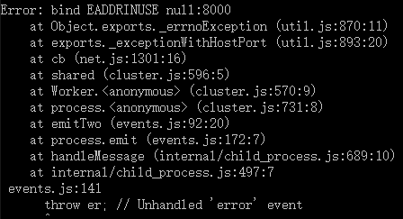

Node 是单线程的，这意味着 Node 只能利用一个处理器来工作。但是， 多数服务器都有多个“多核”处理器，一个多核处理器就包含了几个处理器。有两 个物理 CPU 插槽的服务器可能有 24 个逻辑核，也就是说操作系统看起来有 24 个处 理器。要充分发挥 Node 的作用，需要把这些处理器都利用起来。但如果没有多线 程，该如何做呢？
Node 提供了一个 cluster 模块，可以把任务分配给子进程，就是说 Node 把当前程 序复制了一份给另一个进程（在 Windows 上，它其实是另外一个线程）。每个子进 程有些特殊的能力，比如能够与其他子进程共享 socket 连接。这样我们就可以写一 个 Node 程序，让它创建许多其他 Node 程序，并把任务分配给它们。需要重点理解的是，当你用 cluster 把工作共享到一组复制的 Node 程序时，主 进程不会参与到每个具体的事务中。主进程管理所有的子进程，但当子进程与 I/O 操作交互时，它们是直接进行操作的，不需要通过主进程。这意味着，如果你用 cluster 来创建一个 Web 服务器，请求将不会通过你的主进程，而是直接连接到子 进程。而且，调度这些请求并不会导致系统出现瓶颈. 通过 cluster API，你可以把工作分配给 Node 进程，并分布在服务器所有可用的处 理器上，这能够充分利用资源。
var cluster=require('cluster');
var http=require('http');
var numCpus=require('os').cpus().length;
if(cluster.isMaster){
//创建工作进程
for(var count=0;count<numCpus;count++){
cluster.fork();
}
cluster.on('death',function(worker){
console.log('worker'+worker.pid+"died.");
})
}else{
//工作进程创建http服务器
http.Server(function(req,res){
res.writeHead(200);
res.end("hello.\n");
}).listen(8000);
}
我们使用了 Node 的一些核心模块来把工作平均分配到所有可用的 CPU 上，这些模块为：cluster 模块、http 模块和 os 模块。从 os 模块中，我们可以 轻松得到系统 CPU 的数量。cluster 工作的原理是每一个 Node 进程要么是主进程，要么成为工作进程。当 一个主进程调用 cluster.fork() 方法时，它会创建与主进程一模一样的子进程， 除了两个让每个进程可以检查自己是父 / 子进程的属性以外。在主进程中（Node 运行时直接调用的那个脚本），cluster.isMaster 会返回 true，而 cluster. isWorker 会 返 回 false。 而 在 子 进 程，cluster.isMaster 返 回 false， 且 cluster.isWorker 返回 true。
主脚本为每个 CPU 创建了一个工作进程。每个子进程创建了一个 HTTP 服 务器，这是 cluster 另一个独特的地方。在使用 cluster 的地方使用 listen() 监听一个 socket 的时候，多个进程可以同时监听同一个 socket。如果通过调用 node myscript.js 的方法启动多个 Node 进程，会导致出错，因为第二个进程在启动时会抛出 EADDRINUSE 的异常。cluster 提供了跨平台时让多个进程共享 socket 的方 法。即使多个子进程在共享一个端口上的连接，其中一个堵塞了，也不会影响其他 工作进程的新连接。
除了共享 socket 外，我们还能用 cluster 做更多事情，因为它是基于 child_ process 模块的。这个模块会提供一系列属性，其中最有用的一些可以检查子进程 健康状态。在上面的例子中，当子进程死亡时，主进程会用 console.log() 输出 死亡提醒。
cluster.on('death',function(worker){
console.log('worker'+worker.pid+"died.");
cluster.fork();
})
这个简单的改造让主进程会不停地把死掉的进程重启，从而保证所有的 CPU 都有我 们的服务器在运行。然而，这只是对运行状态的基本检查，我们还能用更多花哨的 技巧。因为工作进程可以传消息给主进程，所以可以让每个工作进程报告自己的状 态，如内存使用量。这让主进程可以觉察哪些工作进程变得不稳定，确认哪些工作 进程没有冻结，或者被长时间运行的事件堵塞。
进程死亡后重启
var cluster=require('cluster');
var http=require('http');
var numCpus=require('os').cpus().length;
var rssWarn=(12*1024*1024)
,heapWan=(10*1024*1024);
if(cluster.isMaster){
//创建工作进程
for(var count=0;count<numCpus;count++){
var worker=cluster.fork();
worker.on('message',function(m){
if(m.memory){
if(m.memory.rss>rssWarn){
console.log('Worker '+m.process+' using too much memory:'+m.memory.rss);
}
}
})
}
cluster.on('death',function(worker){
console.log('worker'+worker.pid+"died.");
cluster.fork();
})
}else{
//工作进程创建http服务器
http.Server(function(req,res){
res.writeHead(200);
res.end("hello.\n");
}).listen(8000);
//每秒报告一次状态
setInterval(function report(){
process.send({
memory:process.memoryUsage(),
process:process.pid
});
},1000)
}
在这个例子里，工作进程报告自己的内存使用量，当子进程使用了过多内存时，主 进程会发送一条警告到日志中去。这是运维团队常用的检测系统健康状态的功能。 这让 Node 主进程有控制的能力，也带来了好处。这个消息传递的接口也允许主进 程把消息发回给工作进程，这意味着你可以把主进程当成工作进程的一个轻量级控制接口。
我们还能用消息传递做更多的事情，而这些事情无法在 Node 之外实现。因为 Node 依赖事件循环来工作，所以有个风险是其中一个事件回调函数运行了很长的时间， 这会导致该进程的其他用户需要等待很长时间才能得到服务。主进程与每个工作进 程有一个连接，所以我们可以告诉它定时发送“all OK”消息，这样我们就能够验 证事件循环在以合适的速度周转着，并没有被某个回调函数堵塞。可悲的是，即使 识别了一个长时间运行的回调函数，我们也无法主动关闭它。因为我们发送给该进 程的任何通知都会加到事件队列里，所以它需要等待已经在长时间运行的回调函数 结束后才会被处理。因此，虽然我们能够让主进程识别僵尸进程，但唯一的补救方 法就是杀掉工作进程，而这会丢失它正在执行的工作。做些准备工作就能让你有能力杀掉某个威胁到系统资源的工作进程。
var cluster=require('cluster');
var http=require('http');
var numCpus=require('os').cpus().length;
var rssWarn=(50*1024*1024)
,heapWan=(50*1024*1024);
var workers={};
if(cluster.isMaster){
//创建工作进程
for(var count=0;count<numCpus;count++){
createWorker();
}
setInterval(function(){
var time=new Date().getTime();
for(var id in workers){
//这里为什么输出的一直是undefined？
//console.log(id);
//还有为什么不是检测每个子进程，而是当所有的进程都被阻塞时才会重启
if(workers[id].lastCb+5000<time){
console.log("Long running worker"+id+" killed.");
workers[id].worker.kill();
delete workers[id];
createWorker();
}
}
},1000);
}else{
//工作进程创建http服务器
http.Server(function(req,res){
//打乱2个客户端请求中的一个
if(Math.floor(Math.random()*100)>50){
console.log('Stopped '+process.pid+' from ever finishing.');
while(true) continue;
}
res.writeHead(200);
res.end("hello."+process.pid+'\n');
}).listen(8000);
//每秒报告一次状态
setInterval(function report(){
process.send({
cmd:"reportMem",
memory:process.memoryUsage(),
});
},1000)
}
function createWorker(){
var worker=cluster.fork();
console.log('Created worker: '+worker.process.pid);
workers[worker.pid]={worker:worker,lastCb:new Date().getTime()};
worker.on('message',function(m){
if(m.cmd==="reportMem"){
workers[m.pid].lastCb=new Date().getTime();
if(m.memory.rss>rssWarn){
console.log("Worker "+m.processs+' using too much memory.');
}
}
})
}
上面程序中的id为什么一直是undefined，在下面代码中就会正确输出。
var workers=[];
workers[100]={worker:"worker","last":"200"};
workers[200]={worker:"daf","last":"400"};
workers[400]={worker:"dadddf","last":"600"};
for(var i in workers){
//输出100:[object:object]格式
console.log(i+" : "+workers[i]);
}
在这个脚本中，我们给主进程也添加了类似工作进程的定时器。现在，每当一个工 作进程向主进程发送报告时，主进程都会记录报告的时间。大约每隔一秒，主进程 就会检查所有的工作进程，看看是否有某个进程已经超过 5 秒未更新状态（因为超时是以微秒为单位，所以我们用的是 >5000）。如果发现这样的进程，主进程将把阻塞的工作进程杀掉并重启。为了让这个流程更加高效，我们把创建工作进程的代码 放到一个小程序里，这样就能在同一个地方为不同情景提供启动工作。我们也对 HTTP 服务器做了一个小改动，让每个请求有 1/2 的概率会出错。这些彻底分隔的Node程序通过消息传递来交互。因为主进程是简单的小程序，不会卡住，所以它在任何情况下都能够一直检查其他进程。